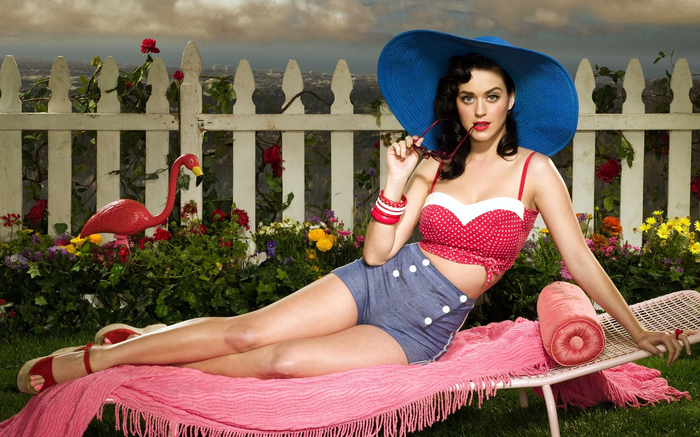

The period between the two World Wars, often considered to be the Golden Age of French fashion, was one of great change and reformation. Carriages were replaced by cars, princes and princesses lost their crowns, and haute couture found new clients in the ranks of film actresses, American heiresses, and the wives and daughters of wealthy industrialists.
After World War II, Paris's reputation as the global center of fashion began to crumble. A new youth style emerged in the 1950s, changing the focus of fashion. In the West, the traditional divide between high society and the working class was challenged. In particular, a new young generation wanted to reap the benefits of a booming consumer society. Privilege became less blatantly advertised than in the past and differences were more glossed over. As the ancient European hierarchies were overturned, the external marks of distinction faded. By the time the first rockets were launched into space, Europe was more than ready to adopt a quality ready-to-wear garment along American lines—something to occupy the middle ground between off-the-peg and couture. This need was all the more pressing because increases in overheads and raw material costs were beginning to relegate handmade fashion to the sidelines. Meanwhile, rapidly developing new technologies made it increasingly easy to manufacture an ever-improving, high-quality product. Faced with the threat of a factory-made, fashion-based product, Parisian fashion couture mounted its defenses, but to little effect. While the old world was taking its final bow, the changes in fashion were one of the most visible manifestations of the general shake-up in society. Before long, classes of women hitherto restricted to inferior substitutes to haute couture would enjoy a greatly enlarged freedom of choice. Dealing in far larger quantities, production cycles were longer than those of couture workshops, which meant that stylists planning their lines for the twice-yearly collections had to try to guess more than a year in advance what their customers would want. A new authority had taken over—that of the street, constituting a further threat to the dictatorship of couture.
During the late 20th century, fashions began to criss-cross international boundaries with rapidity. Popular Western styles were adopted all over the world, and many designers from outside of the West had a profound impact on fashion. Synthetic materials such as Lycra/spandex, and viscose became widely used, and fashion, after two decades of looking to the future, once again turned to the past for inspiration.
The history of fashion design refers to the development of the fashion industry which designs clothing and accessories. The modern industry, based around firms or fashion houses run by individual designers, started in the 19th century with Charles Frederick Worth who was the first designer to have his label sewn into the garments that he created.
Couture beginnings. Rose Bertin (July 2, 1747 – September 22, 1813) was the dressmaker named bill to Marie Antoinette, Queen of France, and a high public profile. Sometimes called sarcastically the "Minister of Fashion", she opened a shop in Paris and had a considerable influence on Parisian style, until this was drastically changed by the French Revolution, from which she fled into exile in London for some years.  An Englishman living in Paris, Charles Frederick Worth (1825 - 1905) is usually seen as the first designer in something like the modern sense, with a large business employing many largely anonymous tailors and seamstresses. A former draper, Worth's success was such that he was able to dictate what they should wear to his customers. Launched into the spotlight as the Empress Eugénie's primary designer, Worth used his royal connections to gain recognition and clients. The proclamation on February 1, 1853 by Napolón III that no visitors would be received to his court without formal dress meant that the popularity of Worth-style gowns was overwhelming.
Ornately decorated and constructed from the finest materials, Worth's gowns are well known for their crinolines (cage-like metal structures that held the dress out in a stylish shape. Throughout the early 20th century, practically all high fashion originated in Paris and to a lesser extent London. Fashion magazines from other countries sent editors to the Paris fashion shows. Department stores sent buyers to the Paris shows, where they purchased garments to copy (and openly stole the style lines and trim details of others). Both made-to-measure salons and ready-to-wear departments featured the latest Paris trends, adapted to the stores' assumptions about the lifestyles and pocket books of their targeted customers. At this time in history the division between haute couture and ready-to-wear was not sharply defined. The two separate modes of production were still far from being competitors and they often co-existed in houses where the seamstresses moved freely between made-to-measure and ready-made. Around the start of the 20th century fashion magazines began to include photographs and became even more influential.